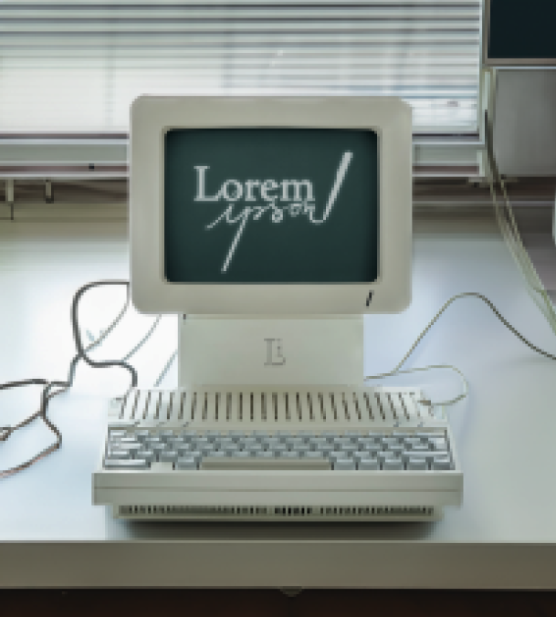
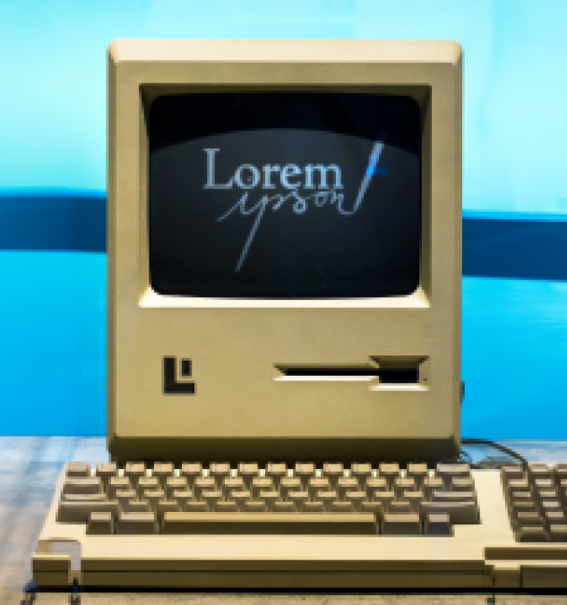

À propos de nous
Fondée en 1987 par Mike Ipson, Lorem Ipson est une entreprise basée sur la conviction que la technologie peut et doit améliorer la qualité de la rédaction. Nous croyons que chaque mot compte, et nous créons des outils pour aider nos utilisateurs à faire de chaque mot le meilleur possible.
Nos produits
Lorem Ipson Personal Computer (LIPC) - Classic
Notre premier produit, le LIPC Classic, a changé la donne dans l'industrie. Conçu pour les écrivains, les journalistes, les étudiants, et tous ceux qui utilisent régulièrement le texte pour s'exprimer ou pour travailler, ce fut l'innovation qui a établi la norme pour tous nos produits futurs. Il est toujours aussi fiable et aimé par nos clients fidèles.
Caractéristiques principales :
- Processeur : Intel 8088, 4.77 MHz
- Mémoire vive (RAM) : 64 Ko
- Stockage : Double lecteur de disquette 5.25" 360 Ko
- Système d'exploitation : MS-DOS 1.0
- Affichage : Monochrome sur écran CRT 12"
- Logiciels intégrés : éditeur de texte, dessin, tableur
- Port de communication : RS-232
Lorem Ipson Personal Computer (LIPC) - Nouvelle Génération
Notre dernier né, le LIPC Nouvelle Génération, est le résultat de 15 ans de recherche et d'innovation. Conservant l'essence de notre classique adoré, nous avons amélioré et modernisé chaque aspect pour s'adapter aux besoins changeants des écrivains du 21e siècle. Un processeur plus rapide, une capacité de stockage plus grande, et une gamme élargie de logiciels intégrés font du LIPC Nouvelle Génération un outil indispensable pour chaque écrivain.
Caractéristiques principales :
- Processeur : Intel Pentium II, 233 MHz
- Mémoire vive (RAM) : 32 Mo
- Stockage : Disque dur de 2 Go
- Système d'exploitation : Windows 95
- Affichage : Couleur sur écran CRT 15", résolution de 800x600
- Logiciels intégrés : Microsoft Office 97 (Word, Excel, PowerPoint), Adobe Acrobat, Internet Explorer
- Connectivité : Modem 56k, port parallèle pour l'impression, 2 ports USB